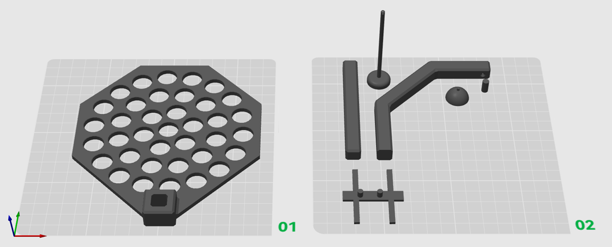

01 · INTERACCIONES MAGNÉTICAS
Péndulo magnético
La base hexagonal presenta 36 orificios distribuidos radialmente para variar las posiciones de cinco imanes fijos. Un sexto imán oscila suspendido mediante un hilo, con su polo norte orientado hacia abajo.
- Fabricación
- 4 piezas impresas en PLA: base, 2 segmentos de mástil y soporte
- Dimensiones
- Base hexagonal de 80 mm de lado; mástil de 200 mm
- Complementos
- 6 imanes de ferrita de Ø 15 mm y 3 mm de espesor, hilo de poliéster 40/2 y adhesivo de cianoacrilato